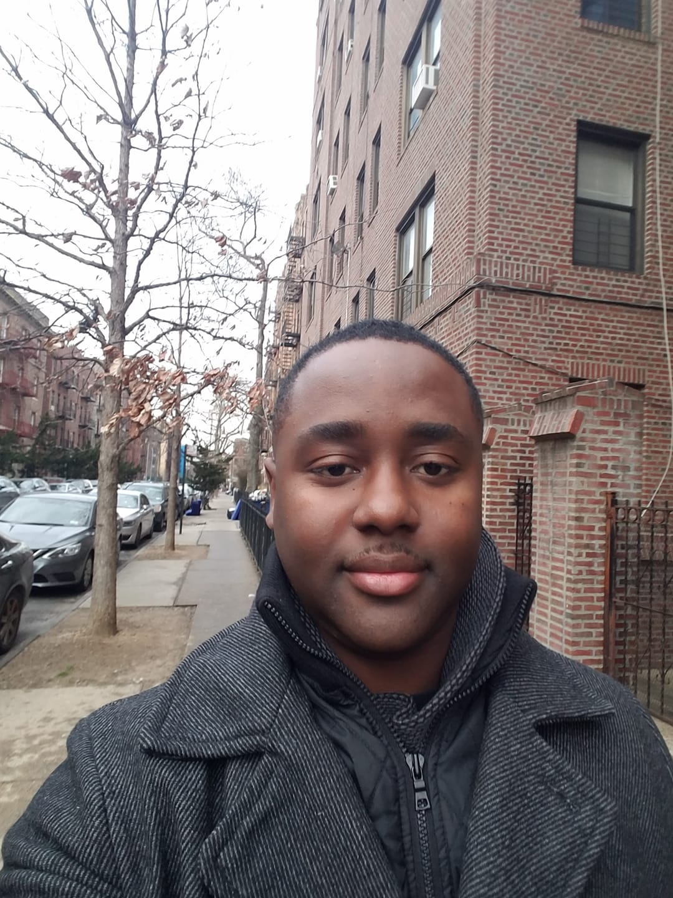

Steeve Pierre

*email:bright lightdeveloper@gmail.com *phone:718-564-0421 *address: 1024 Dartmouth lane, Woodmere, NY, 11598
Professional Summary
Results-driven MERN Stack Software Engineer with [X] years of experience designing,
developing, and deploying full-stack web applications. Proficient in MongoDB, Express.js, React.js,
and Node.js, with expertise in building scalable APIs, responsive UIs, and optimized database
solutions. Adept at agile workflows, problem-solving, and delivering high-quality code on time.
Passionate about creating user-centric solutions that improve efficiency and enhance user experiences.
📚Education
A.S. in Computer Science CUNY BMCC, 2002
B.S in Business Management And Finance CUNY Brooklyn College 2024
Mern Stack Certification Nucamp 2020
🛠 Technical Skills
- Front-End: React.js, Redux, HTML5, CSS3, TailwindCSS, Material-UI, Bootstrap
- Back-End: Node.js, Express.js, REST APIs, GraphQL
- Database: MongoDB, Mongoose, MySQL
- Tools & Platforms: Git, GitHub, Docker, Postman, AWS (EC2, S3), Vercel, Netlify
- Methodologies: Agile/Scrum, CI/CD, Test-Driven Development (TDD)>
💻 Professional Experience
MERN Stack Developer – Amazon, New York | 08/2025 – Present
- Designed and deployed scalable full-stack applications using MERN stack.
- Built RESTful APIs with Express.js and Node.js to handle complex business logic.
- Integrated MongoDB with Mongoose for efficient data modeling and querying.
- Developed dynamic, responsive UIs using React.js, Redux, and modern CSS frameworks.
- Optimized application performance, reducing load times by 20% through code refactoring and caching strategies.
Junior Full-Stack Developer – Facebook, New Yor | 05/2022 – 05/2025
- Assisted in building new features and fixing bugs for existing MERN applications.
- Collaborated with cross-functional teams using Agile methodology.
- Wrote unit and integration tests to ensure application reliability.
📂 Projects
- Resume – Quick fictitious resume practicing my skills
- Brithday Card – Short birthday presentation card